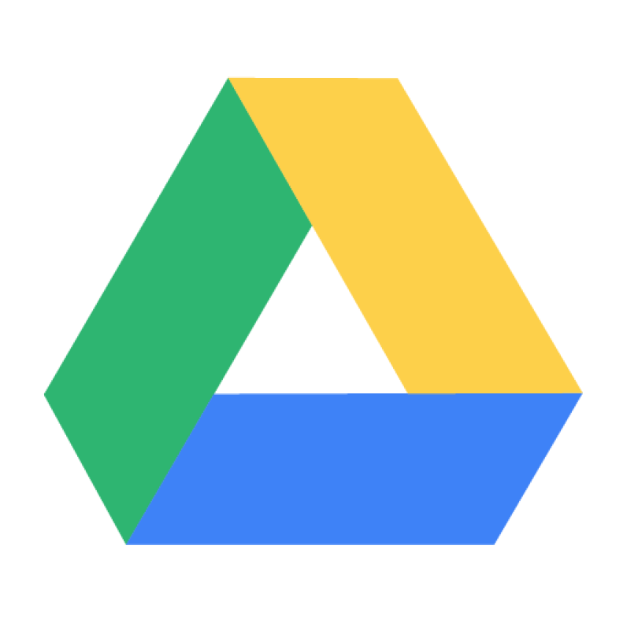
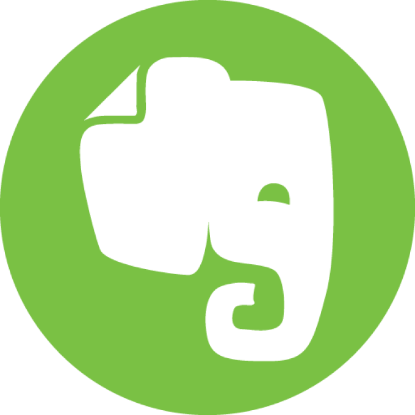
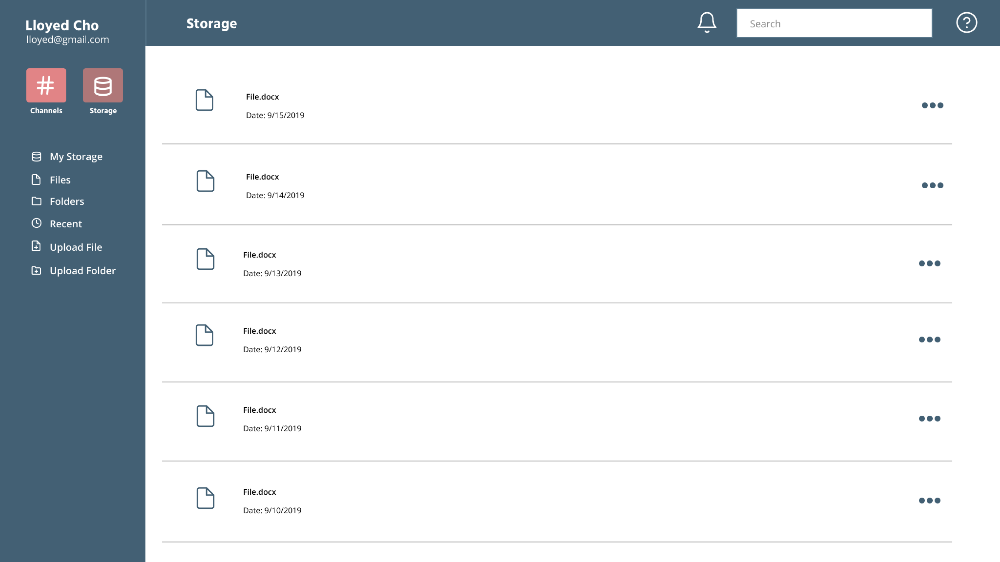
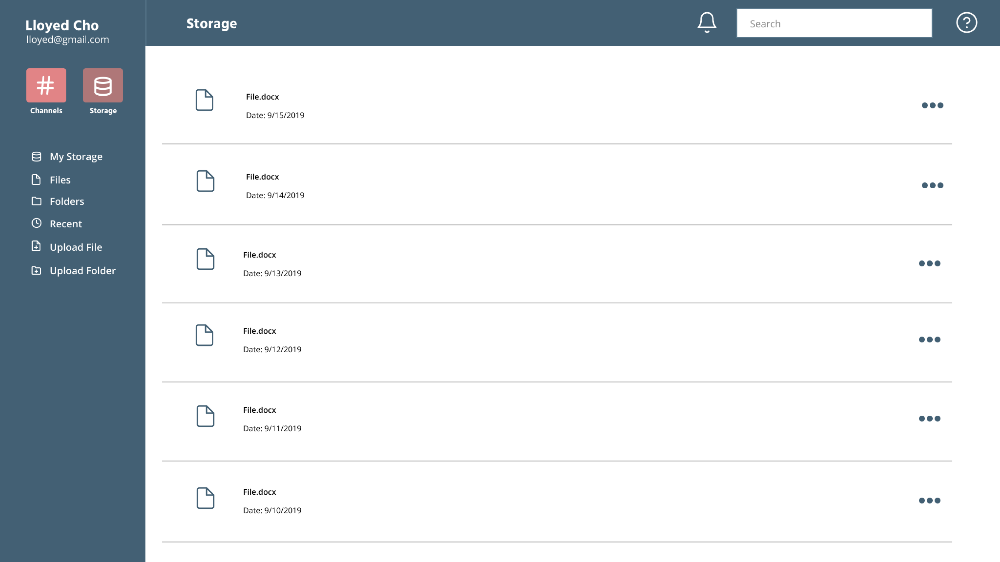
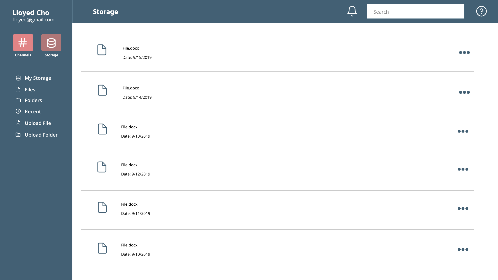

There are several applications needed in order to connect and work with others effectively in today’s era.
The current user experience currently jumps around from one application to another in order to finish tasks
such as making documents, storing files, and communicating with others. Workflow wants to change it by giving
users the accessibility to access all these features and more within the app making the user’s workflow more fluid.
Problem
Students and Employed workers need to utilize several different apps in order to execute tasks within
their daily work field. With today’s current market there wasn’t an app that provided features that enabled
user’s to utilize a single app where users can store files, communicate with colleagues and friends,
and work on projects together.
Solution
After all the testing that was conducted, I designed several prototypes with the idea to keep the app familiar
to new users and create an app where users are able to stay and work in one platform. For this app, I wanted
the main focus to be on communication so users and able to talk about different ideas as they are working on
projects. The key features that I have added are voice and chat channels, project’s page that consists of
having a document, sheets, and slides, and finally a storage page. Having access to all of these features
in an app will enable user’s to work efficiently and effectively through their daily tasks.
Survey
I created a user survey to see what types of storage and sharing application users were mostly using on a day
by day basis. Based on the survey responses, some of the reasons people used their storage and sharing applications
were:
Around half of the people that have taken the survey claimed that they were students and the other half said they were employed for wages.
The overall goals of the user surveys were to have the folowing:
1. Saving the content you find on the web
2. Organizing that content using things like categories, tags,groups, folders.
3. Creating content
4. Uploading files from the computer or mobile device.
Competitive Analysis
I created a user survey to see what types of storage and sharing application users were mostly using on a day
by day basis. Based on the survey responses, some of the reasons people used their storage and sharing
applications were.


Differentiators between the three companies that I analyzed, utilized similar functionalities but approached them
in different ways. To generate ideas for the product, I wanted my targeted audience to be tailored towards students
and employees.
User Persona
I then began to create user personas where I made two different audiences. One of the personas is a student searching
for a place to store files and be able to collaborate with multiple users while the other persona is an employee that hopes
to find an app that will help with his productivity and have better communication flow with his co-workers.
With those different perspectives, I then wrote user stories to rank the importance of what a new user might do on a
website tailored towards students and employees.
User Flow
After researching and creating ideas for the website, I sketched and then mocked up multiple user flows to show how the
features would flow within the website. These are some user flow examples.
Branding
This process helps companies understand and communicate consistent visuals and messaging to their audiences.
The brand style guide helps define the Workflow’s brand elements and how they should be used across all marketing
materials. The process of creating the style guide was to first sketch out ideas for the logo design. After choosing
what I thought was the best design for the project, I create a mood board to capture what type of mood I wanted
Workflow to represent.
Once I created the mood board then I started to think about what type of typography I wanted to use throughout Workflow’s
branding. I was working with either with Rubik or Hind as my header typeface for Workflow. In the end I chose to use the
fonts Hind, Open Sans, and Biryani because I felt that these san serif fonts worked well with the name Workflow and the
typefaces were easy to read from a distance.
After coming up with the typefaces I moved on to creating the logo and adding the colors from the mood board onto the logo.
With that, I started to create the branding style guide that would be applied for the rest of Workflow’s branding.
Wireframes
After researching and creating ideas for the website, I sketched and then mocked up multiple user flows to show how the
features would flow within the website. These are some user flow examples.
These are the final mockups of the website utilizing the branding style guide and the wireframing.

This the final version of the mobile app. I utilize material design throughout the design process of making the mobile
version. A key functionality of the mobile version of this app is the tab feature which allows users to easily move to
the channel, storage, and projects page.
With these mockups, I was able to create clickable prototypes that can be interacted with either mobile or desktop.
By creating these prototypes, I was able to create usability testings where I tested two in-person and one remote
usability tests. I tested users on different tasks and questions based on the functionality of the website.
Every user that tested this website was able to complete the tasks given with ease. With the testing, I did get some
eedback to make the website easier to use and applied them to my work afterward.
Conclusion
In my opinion, there are more features that I could’ve introduced in order to make a more fluid user experience.
What works in my design is how the design is easy to navigate and people are able to easily identify the importance
of features based on color. If I had more time I would have elaborated more by making mock-ups of the slides and
sheets page. With this people can have a clearer idea of what the portion of the project of the app would look like
instead of having just one example.


.png)


 
